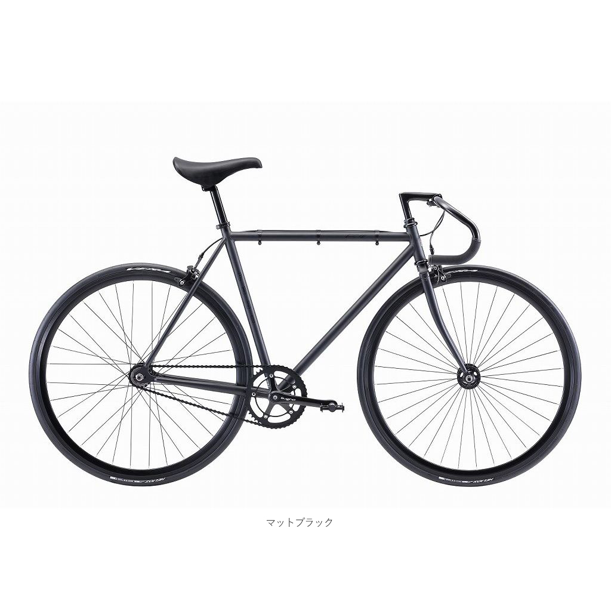

ピストバイクならFUJIのFeatherがおすすめ！シンプルでかっこいいピストバイクを紹介します
2023-01-03 by 内田裕之
- 「シンプルでかっこいいピストバイクに乗りたい！」
- 「FUJIのFeatherってどうなの？」
この記事はそんな方へ向けて書いています。
こんにちは。
FUJIのFeatherで通勤するうっちゃんです。
最近、スポーツ自転車をよく見かけませんか？
実はロードバイクやピストバイクが流行しているんです。
ピストバイクって、シンプルでかっこいいですよ。
走るために作られた乗り物みたいで、とっても気に入っています。
今回はFUJIのFeatherを買ってよかった点を紹介します。
■目次
ピストバイクならFUJIのFeatherがスタイリッシュでかっこいい！
スポーツタイプの自転車といえばロードバイクが定番です。
漫画「弱虫ペダル」から自転車ブームが始まったように感じます。
街中や道路でロードバイクを見かける機会が増えましたよね。
私もロードバイクからデビューしましたが、いまはピストバイクに乗っています。

なぜなら、ピストバイクにはたくさんのメリットがあるからです。
シングルギアなので手入れが簡単！
ロードバイクは１０速あると手入れが大変なんですよね。
分解して洗浄するのは、とっても面倒でした。
一方、シングルギアなら歯ブラシでも簡単に掃除ができます。
手入れに手間がかからないのがいいですよね。
デザインがシンプルでかっこいい
ピストバイクは無駄な装飾などが一切なく、走るためにつくられた自転車って感じがとてもかっこいいです。
特にサドルがハンドルよりも高い位置にあるのがかっこよく感じます。
ハンドルにテープもないので、見た目がスッキリしています。
キックスタンドを簡単に取り付けられる！
駐輪する時はスタンドが必要です。
ロードバイクやピストバイクを購入しただけではスタンドがついていないので、倒れてしまいます。
高価な自転車が横倒しになって傷つくのは見ていられないですよね。
ピストバイクはシンプルで装飾品などがないのでキックスタンドを簡単に取り付けられます。

平地をかなり早く走れる！
シングルギアのピストバイクは平地を走るのに使いやすいです。
ペダルは重くないのにスイスイ進んでいくので、かんたんに２０〜３０km/hは出せます。
ロードバイクみたいにガチャガチャギアチェンジする必要がないのでとっても楽に操作ができます。
チェーンが外れる心配が少ない
ロードバイクは変速を失敗するとチェーンが外れるリスクがあります。
また、ペダル側のギアをアウターに、後輪側のギアを径が大きい側（インナー）にすると、チェーンが伸びてしまう問題があります。
チェーンが伸びると外れやすくなるので、使い方次第では寿命を縮めやすいです。
一方、シングルギアのピストバイクは変速操作がないためチェーンを劣化させるようなミスをしにくいといえます。
メンテナンスが楽ちん！
ピストバイクは部品が少ないのでメンテナンスも簡単です。
油を差す手間も、ロードバイクの半分と言っても過言ではないです。
もともと私はめんどくさがりですし、冬は寒いのでメンテナンスをサボりがちです。
でも、ピストバイクなら短時間で終わるので、私でも継続できています。
メンテナンスを簡単に済ませたい人にもピストバイクはおすすめです。
ちなみに私はこちらのアイテムを使っています。


ブレーキがハンドルの内側にあるので使いやすい！
ピストバイクといえど、ブレーキがないと公道を走れません。
Featherはハンドルの内側にブレーキが付いています。
ドロップハンドルにはブレーキはないので全力疾走しているときはノンブレーキで走れます。
（頭を下げていると危険かも・・）
軽く走る時は手元にブレーキがあるので、ロードバイクなどより使いやすいです。
軽いので持ち運びも簡単！
雨が降った時などは妻に車で迎えに来てもらいます。
車に載せる時、ママチャリだと重くて大変なんですよね。
ロードバイクはチェーンが外れないかと心配になります。
しかし、ピストバイクなら9.2kgと軽いですし、シングルチェーンなので外れても簡単に直せます。
まとめ
これからスポーツ自転車に乗りたい、ロードバイクは飽きてきたと感じるならぜひピストバイクに乗ってみるのをおすすめします。
ライトなど付属品はこちらがおすすめです。


ここまで読んでいただきありがとうございます。